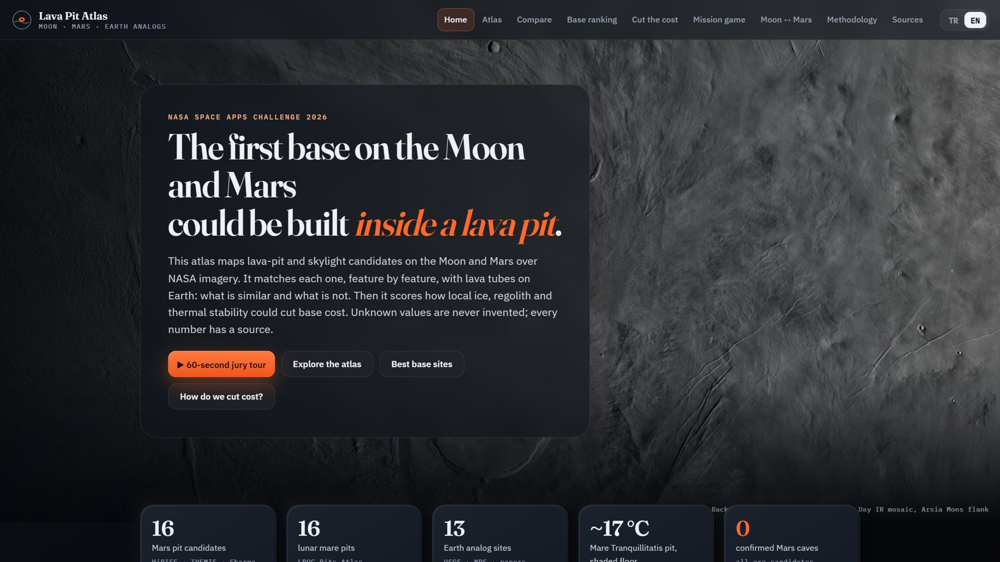
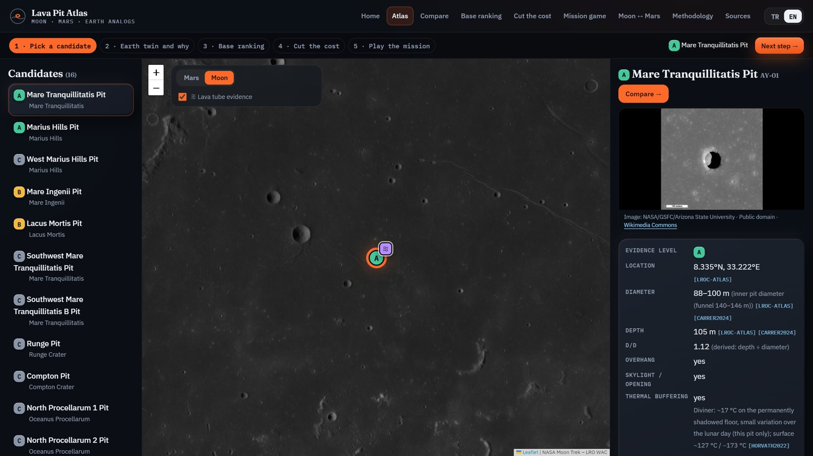
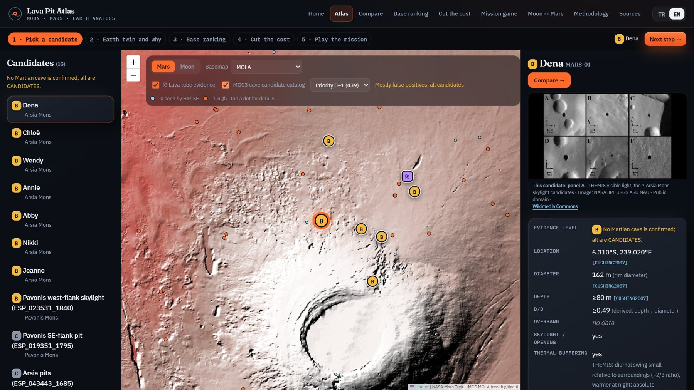
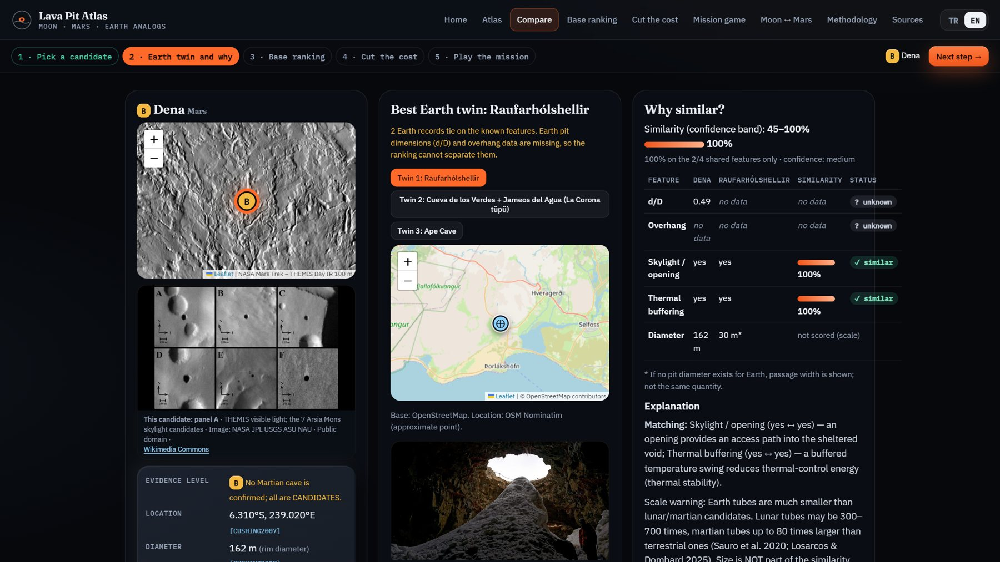
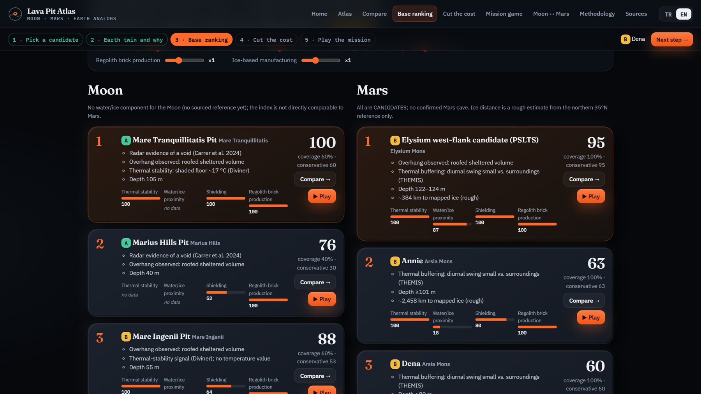
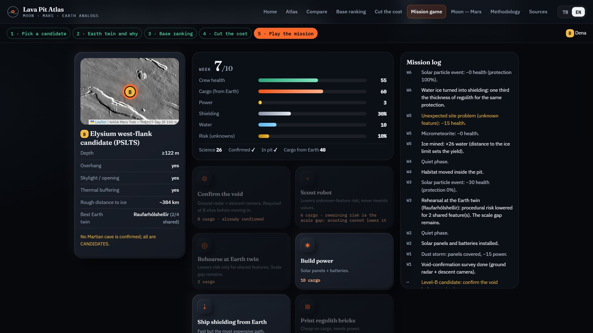

NASA Space Apps Challenge 2026 · Team Milestone
Could the first base on the Moon or Mars sit inside a lava pit, and which place on Earth lets us rehearse it?
Challenge: find locations on Earth that resemble permanent base sites on the Moon and Mars.
Team Milestone

Why a pit and not the open surface
On the Moon the surface goes above 121 °C in the day and drops to −133 °C at night. There is no air to stop radiation or micrometeorites. Shielding brought from Earth is heavy, and heavy means expensive.
Lava pits and skylights are openings into old lava tubes. Inside, the rock itself is the shield. The shaded floor of the Mare Tranquillitatis pit stays near 17 °C.
The organizers said they already know the list of analog sites. So we did not make another list. We compare each Moon or Mars pit with Earth lava tubes feature by feature, and we show where they do not match as clearly as where they do.

Mare Tranquillitatis pit on NASA Moon Trek (LRO WAC). Evidence level A: radar shows a conduit under the pit.
What we built · 1

Arsia Mons, Mars: the seven THEMIS skylight candidates, MGC3 points and a tube evidence marker.
What we built · 2
For each pit we score Earth caves on four things: depth-to-diameter ratio, overhang, open skylight and thermal buffering. Missing data is skipped, not guessed. Instead the score gets a confidence band, so a twin with one shared feature can never look as good as one with four.
Size is not in the score. Lunar tubes may be 300 to 700 times larger than the ones on Earth, Martian tubes up to 80 times. We say that on every comparison.
Each twin also tells you what it is good for as a test site, for example LiDAR and radio tests in Lanzarote, where ESA already trains astronauts.

Dena (Arsia Mons) vs. Raufarhólshellir, Iceland: what matches, what is unknown, band 45–100%.
Where to build
Radar points to a conduit under it, it has 10–15 m overhangs, it is 105 m deep, and the shaded floor sits near 17 °C.
It has an overhanging rim, it stays warmer than its neighbours at night, it is about 122 m deep, and it lies roughly 384 km from mapped ground ice. The Arsia candidates are about 2,400 km away.
Ranking rule: evidence level first, then a cost index that counts missing values as zero. A pit with little data cannot jump ahead of a well-measured one. The ice distance is a rough estimate from the 35°N SWIM reference.

Cutting the cost
Water ice vs. regolith thickness for the same 50 mSv/year limit:
Cave Base Mission is a small game built on the same data. You run 10 weeks at a real candidate, and rehearsing at its Earth twin lowers risk. It is a game model and we label it that way.

Cave Base Mission at the Elysium candidate: habitat inside the pit, ice shield built.
What comes next
Measure the skylights of Earth tubes with LiDAR. Their depths are the biggest gap in our data, and that gap is why most matches are only medium confidence. After that we would add the SWIM ice map as a layer and run a small rehearsal at an analog tube.
No cave on Mars is confirmed yet. Every Mars site here is a candidate. We never invent a value: if a source is missing or two sources disagree, the site says so.
ttk-prens.github.io/lav-cukurlari-atlasi
github.com/TTK-prens/lav-cukurlari-atlasi
Turkish and English · works on phones · a 60-second tour button on the home page.
NASA Moon/Mars Trek, LRO (LROC, Diviner, Mini-RF), MRO HiRISE, Mars Odyssey THEMIS, NASA SWIM, USGS Astrogeology MGC3 (PDS), GRAIL; ESA; USGS HVO; NPS; Wikimedia Commons photos (credited on the site). Built with Vite, TypeScript, Leaflet and Python. AI coding assistant: Claude (Anthropic).